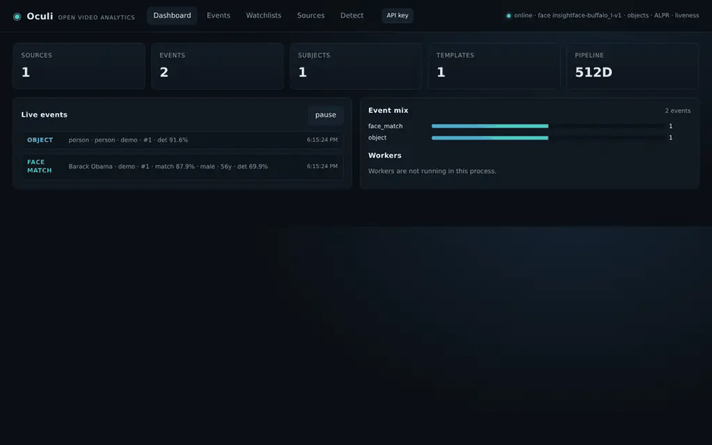
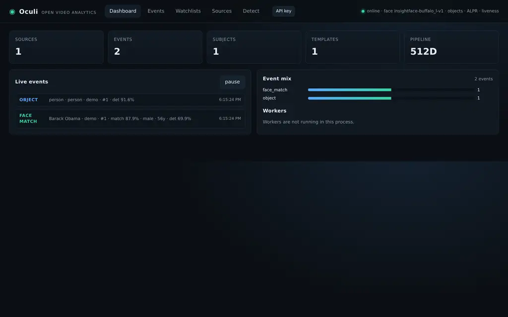
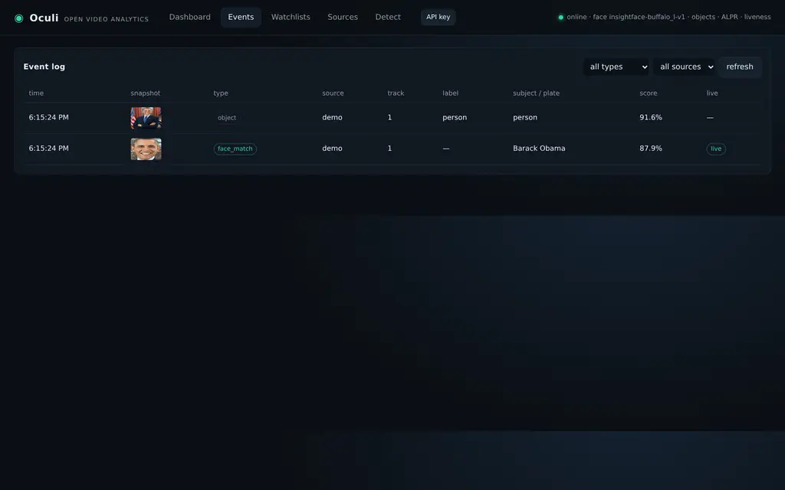
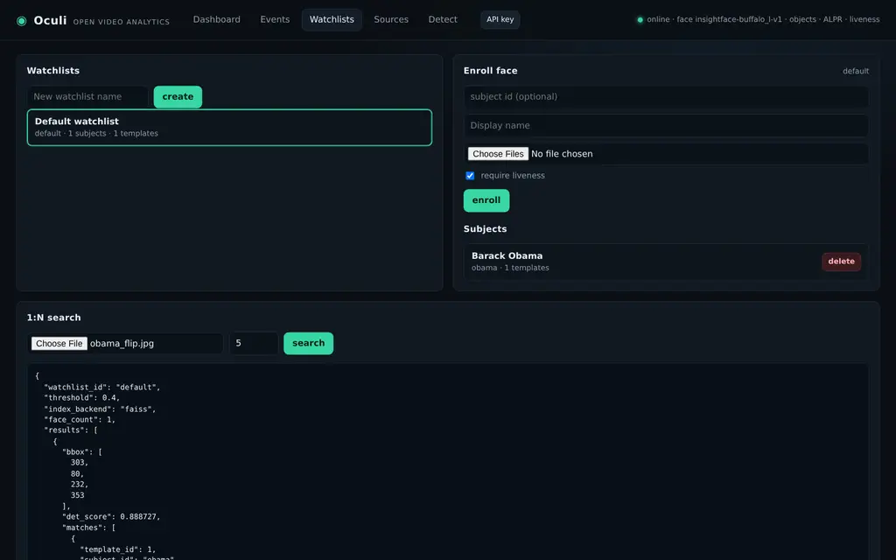
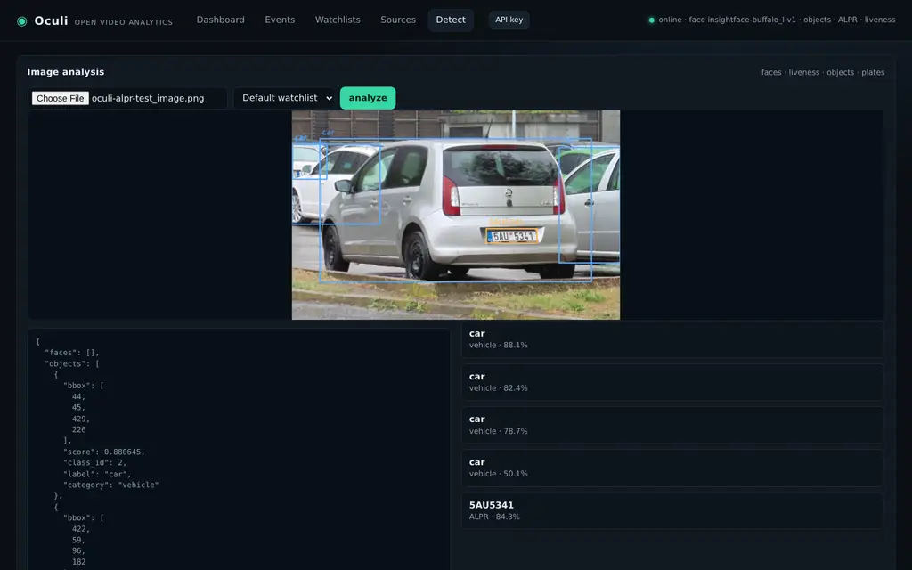
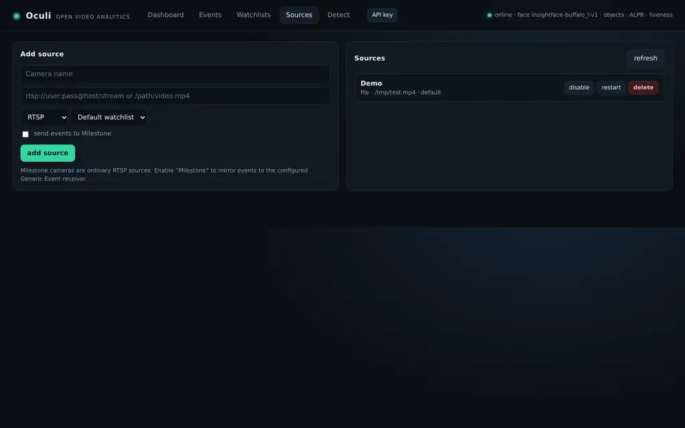

Face recognition and watchlists, person/vehicle classification, ALPR, passive liveness, tracking, snapshots, a web dashboard, REST API, Redpanda events and Milestone Generic Events — assembled from open models.

One pipeline, one SQLite database, one API. No cloud dependency.
InsightFace SCRFD + ArcFace 512-D templates, 1:N search, 1:1 verification and liveness gating.
YOLOX-s classes with per-source track IDs and event snapshots.
fast-alpr plate detector + CCT OCR, event deduplication and metadata.
JSON events to Redpanda/Kafka, SQLite persistence, retention and Prometheus metrics.
Live events, snapshots, source management, enrollment, search and image analysis.
RTSP ingest and Milestone Generic Events over TCP, UDP or webhook.
Captured from the running app. Animated tour above; stills below.





Modal Tesla T4 · ONNX Runtime GPU · InsightFace buffalo_l.
| Face detect + 512-D embedding | CPU | CUDA (T4) | Speed-up | CUDA img/s |
|---|---|---|---|---|
| 640 × 480 | 130.1 ms | 36.7 ms | 3.5× | 27.2 |
| 1280 × 720 | 141.9 ms | 32.7 ms | 4.3× | 30.6 |
| 1920 × 1080 | 147.8 ms | 32.9 ms | 4.5× | 30.4 |
| Stage (same T4 host) | Mean latency | Throughput | Provider |
|---|---|---|---|
| Passive liveness (MiniFASNet) | 5.7 ms | 174.4 FPS | CPU session |
| ALPR (fast-alpr) | 26.2 ms | 38.1 FPS | ONNX Runtime |
| YOLOX objects | 32.5 ms | 30.8 FPS | ONNX Runtime CUDA |
Full analyze() street image | 130.1 ms | 7.7 FPS | mixed |
| Face search (detect + embed + FAISS) | 60.0 ms | 16.7 FPS | CUDA |
On a T4, InsightFace face work is 3.5–4.5× faster on CUDA in this run, and YOLOX moved from CPU-only OpenCV DNN to ONNX Runtime CUDA (30.8 FPS). The full pipeline is now 7.7 FPS; the next GPU wins are TensorRT for YOLOX and moving ALPR/liveness fully onto CUDA. Raw results: benchmarks.md · JSON.
OCULI_FACE_ENGINE=sface for the MIT/Apache-2.0 fallback.40 passed, 1 skipped — unit, API, security, DB, Milestone, ALPR and liveness tests.
Image built, API key/TLS checked, models cached in a volume, events consumed from oculi.events.
InsightFace same/different-person integration; ALPR read 5AU5341; detector 0.843 / OCR 0.9998.
Full test report · pytest output · real-model output · Coverage HTML · JUnit XML
cd oculi
python3 -m venv .venv
.venv/bin/pip install -e ".[faiss,test]"
export OCULI_API_KEY="$(openssl rand -hex 16)"
.venv/bin/oculi serve --host 0.0.0.0 --port 8080
# Docker + Redpanda
export OCULI_API_KEY="$(openssl rand -hex 16)"
docker compose up --buildDashboard http://localhost:8080/ · API docs /docs · Metrics /metrics.